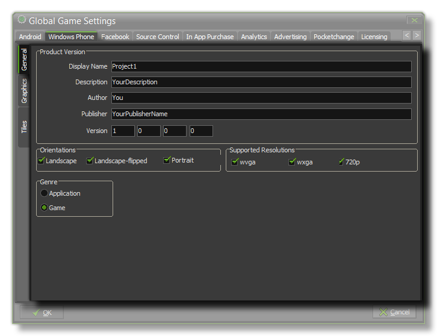
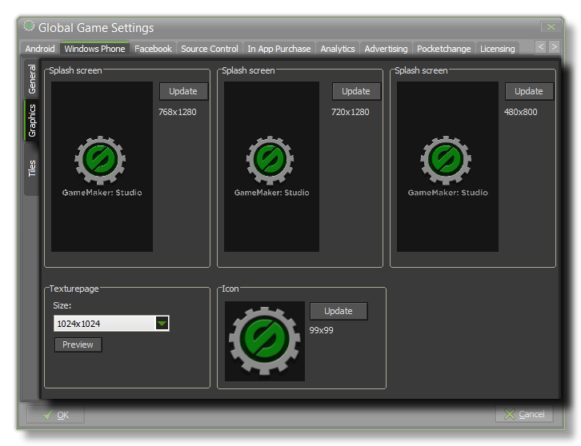
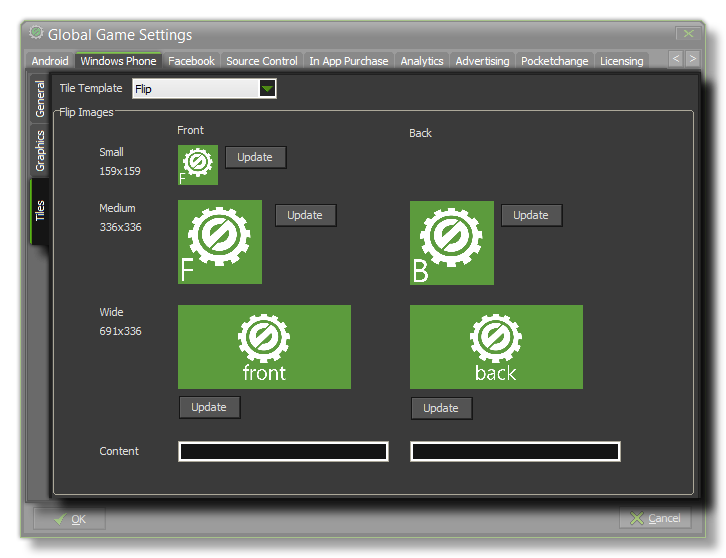
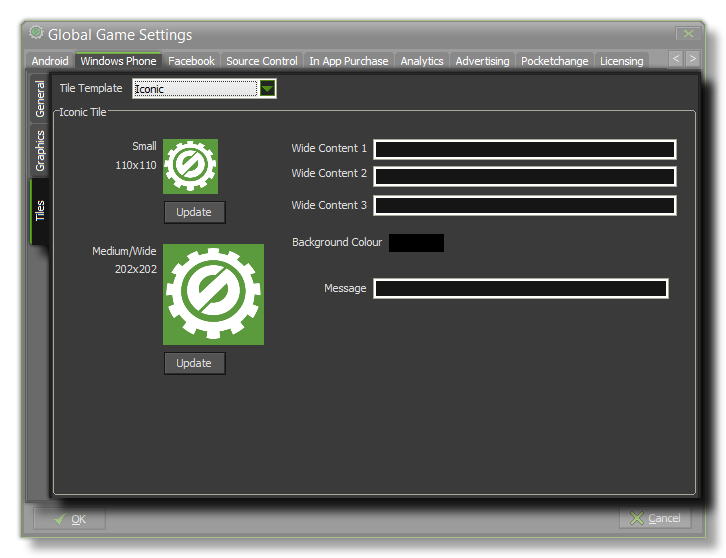
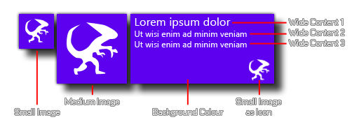
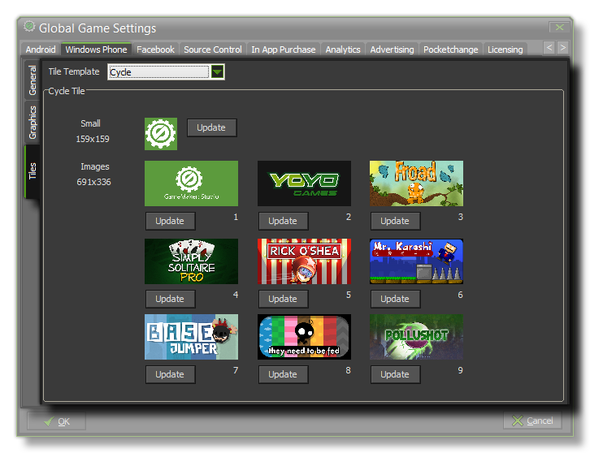

This Windows 8 Phone tab is split into three separate sub-tabs (accessible on the left of the window) to make changing and updating the information for your game clearer and less complicated. These tabs are explained in the following sections.

The first thing to do is fill in the details about your game, including its Display Name, its Description (which should be a short text), the Author name, the Publisher
and finally, the Version info.
The next two sections on this tab are Orientation and Supported Resolutions. The orientation section can be used to lock the game to a specific orientation by checking either
landscape or portrait, or landscape-flipped, while the resolution section is used to target specific displays. The folowing table shows the resolutions and ratios supported:
| Name | Resolution | Aspect Ratio | Scaled resolution |
|---|---|---|---|
| WVGA | 480 × 800 | 15:9 | 480 × 800 |
| WXGA | 768 × 1280 | 15:9 | 480 × 800 |
| 720p | 720 × 1280 | 16:9 | 480 × 853 |
Finally for this tab, you should indicate the Genre of the final product, which can be either Game or Application.

Here you can give your game an Icon and different Splash Screens. The icon should be authored as an individual *.png file with a size of 99x99px. The splash screens should be
made to the sizes of each of the available Windows phone resolutions in *.png format, and it will briefly be shown while the game assets are being loaded.
At the bottom there is the option to set the size of the Texture Page. The default (and most compatible) size is 1024x1024, but you can choose from anywhere between 256x256 up to 2048x2048.
There is also a button marked Preview which will generate the texture pages for this platform and then open a window so that you can see how they look. This can be very useful if you wish
to see how the texture pages are structured and to prevent having texture pages larger (or smaller) than necessary.
NOTE : Be aware that the larger the size of the texture page, the less compatible your game will be.
The Tiles sub-tab is further split into three seperate groups, of which you should choose one to represent how the Live Tile that represents your game or app will be shown on the device.

Flip tiles are ones that will change from one "side" to another every few seconds, and here you can add the different images that you wish each "side" to show. Note that the smallest possible
tile size does not flip and so you only need to supply one 159x159px image for that, while the other two sizes (medium 336x336px and wide 691x336px) will. Beneath the images you can
also supply to Content strings. These will be shown on the back tile only, with the first string being for the medium size and the second one being for the wide size.

The Iconic tile setting uses two images (small at 110x110px and medium at 202x202px) and a series of different text messages to display information about your game. If the user has reduced the tile size to
the smallest or the medium size, then the respective images will be shown only, however when the user has a wide tile size selected, then the image will be displayed as an icon in the lower right of the
tile and various lines of text will be displayed starting at the top right of the tile. The image below illustrates this:

Note that an Iconic Tile image will only ever be white, so the image chosen should be a single "silhouette" with alpha. No matter what your image, it will only ever be shown on an Iconic tile as a white
image over a transparent background.

The final tile type is the Cyclic one. This permits you to specify a small image (159x159px for the small and medium sizes) and a series of 9 different wide tile images (691 x 336px) that will be cycled
using various different transitions.